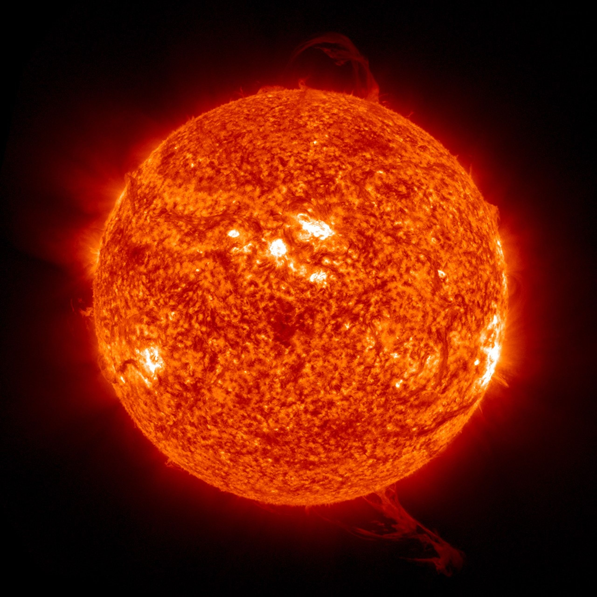

Introduction to the Sun
The Sun is the star at the center of our Solar System.
It
provides Earth with the light and heat needed for life.
The
Sun is much larger than Earth, and all eight planets
travel
around it. Although it looks small from Earth, the Sun
is
actually about 93 million miles away.
What Is the Sun?
The Sun is a huge ball of extremely hot gas. It is made
mostly of hydrogen and helium. The Sun produces a huge
amount of energy, which gives off the light and heat we
experience on Earth.
How Big is the Sun?
The Sun is much larger than Earth. About 109 Earths could
fit
across the Sun. Its size also allows it to make up most
of
the mass in the Solar System. Even though the Sun is
enormous, it is still just one of billions of stars in
space.
The Sun's Temperature
The Sun is extremely hot. Its surface has a temperature
of
about 10,000°F (5,500°C). The inside of the Sun is much
hotter. This extreme heat allows the Sun to produce the
energy that reaches Earth as light and heat.
The Sun and Earth
The Sun is very important to Earth. Its light helps
plants
grow, while its heat keeps Earth warm enough for life.
Earth
is about 93 million miles from the Sun, and sunlight
takes
about eight minutes to reach us.
How Old is the Sun?
The Sun is about 4.6 billion years old. It has been
shining
for billions of years and is expected to continue
producing
light and heat for billions more. The Sun has played an
important role in the Solar System since it formed.
Why is the Sun Important?
Without the Sun, Earth would be dark and extremely cold.
Plants would not be able to grow, and life as we know it
could not exist. The Sun also provides the gravity that
keeps the planets moving around it.